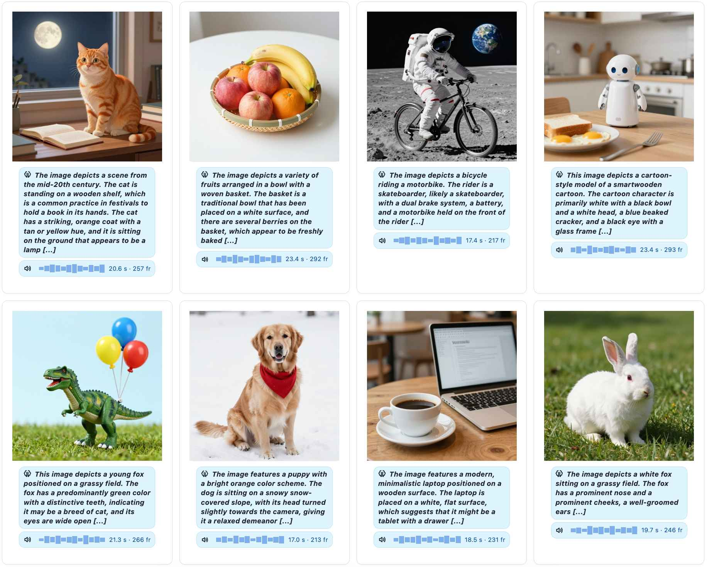
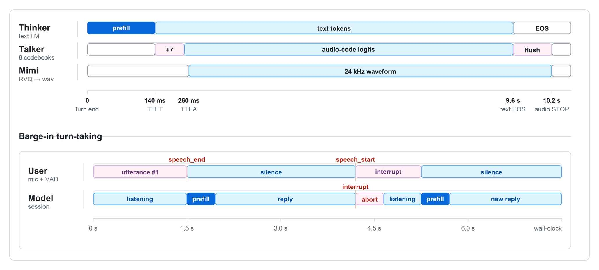

推理与交互
推理阶段要理解三件事：模型怎么加载、不同输入模式如何构造 prompt、音频 codes 如何被 Mimi 解码并流式播放。
命令行推理入口
`eval_omni.py` 支持原生 PyTorch 权重和 transformers 目录两种加载方式。它会加载 tokenizer、MiniMind-O 模型、SenseVoice/SigLIP2 和 Mimi decoder。
# 原生 PyTorch 权重
python eval_omni.py --load_from model --weight sft_omni --mode -1 --prompt_lang 2
# transformers 格式权重
python eval_omni.py --load_from minimind-3o --mode 0,2,4| `--mode` | 含义 | 输入来源 |
|---|---|---|
| `0` | text → text/audio | 脚本内置中英文 prompt。 |
| `1` | multi-turn → text/audio | 脚本内置多轮历史。 |
| `2` | audio → text/audio | `dataset/eval_omni/audio-*.mp3`。 |
| `3` | clone voice → text/audio | `model/speaker/voices_unseen.pt`。 |
| `4` | image → text/audio | `dataset/eval_omni/*.jpg`。 |
| `5` | image + audio → text/audio | 图片样例 + `img-*.mp3` 语音问题。 |
| `-1` | 全部模式 | 等价于 `0,1,2,3,4,5`。 |
文本与语音输出
`eval_sample` 会调用 `model.generate(..., stream=True, return_audio_codes=True)`。Thinker 的文本增量打印到终端；Talker 的 audio frame 收集起来后交给 `MimiModel.decode`，保存为 mp3。
chat template → input_ids
├─ MiniMindOmni.generate(stream=True)
│ ├─ yield text token ids
│ └─ yield 8-layer audio frame
├─ MimiModel.decode(codes)
└─ save mp3 to output_audio/语音与图像输入
语音输入
OmniDataset.process_audio 读取 mp3/wav，重采样到 16 kHz，生成 SenseVoice fbank。prompt 则由若干 <|audio_pad|> 占位符组成。
图像输入
PIL 读取图片，SigLIP processor 输出 pixel_values。prompt 在文本后拼接 64 个 <|image_pad|>。

音色选择与克隆
发布资源里包含 `model/speaker/voices.pt`、`voices_unseen.pt` 和手工克隆文件 `voice_clone.pt`。每个音色通常包含 `ref_codes` 和 `spk_emb`，推理时作为 Talker 条件输入。
内置音色
来自 `voices.pt`，WebUI 中标为内置。
Unseen 音色
来自 `voices_unseen.pt`，适合观察零样本迁移。
手动克隆
`webui/web_demo.py` 可上传参考音频，生成 `voice_clone.pt`。
Gradio WebUI
`scripts/web_demo_omni.py` 是较直接的 Gradio demo。它会扫描 `scripts/` 目录下的 transformers 模型子目录，所以需要先把模型复制进去。
cp -r minimind-3o ./scripts/minimind-3o
cd scripts
python web_demo_omni.py --port 8888这个界面适合快速体验文字、音频、图片和音色选择。
电话模式 WebUI
`webui/web_demo.py` 加上 `webui/web_demo.html` 提供更完整的实时交互：前端录音、WebSocket 传输、后端 VAD 判断、模型流式回复、Mimi 解码播放，以及用户打断。

cd webui
python web_demo.py --port 8888实时打断如何工作
`RealtimeSession` 是纯工程层，不耦合模型权重。它用 Silero VAD 对 16 kHz 音频块打分：检测到足够长的语音后进入 speaking；静音持续到阈值后返回 speech_end；如果模型正在 generating 且用户又开始 speaking，就返回 interrupt。
listening
├─ speech probability > threshold → speaking
├─ silence long enough → speech_end
└─ speaking while generating → interrupt